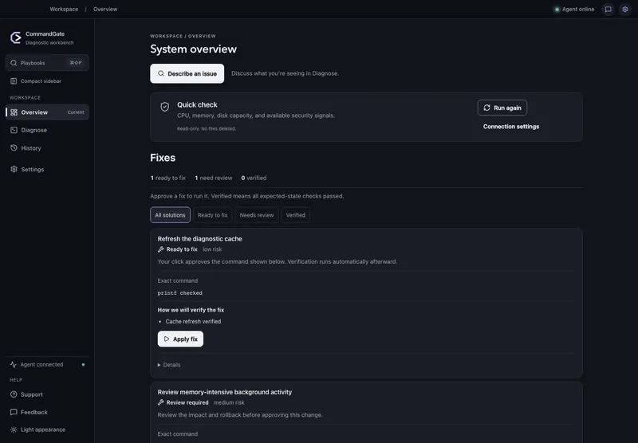
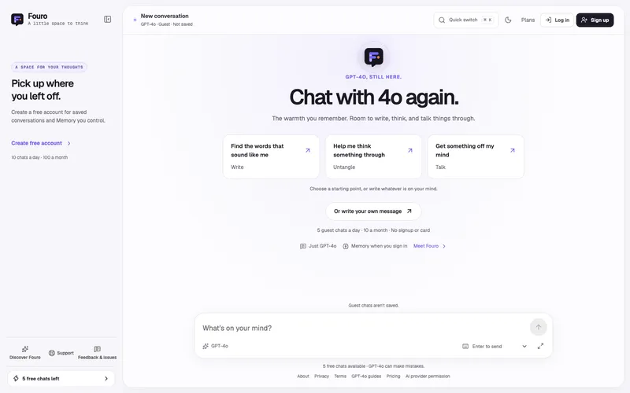
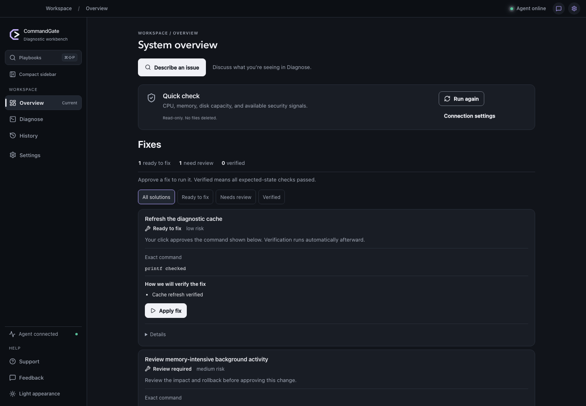
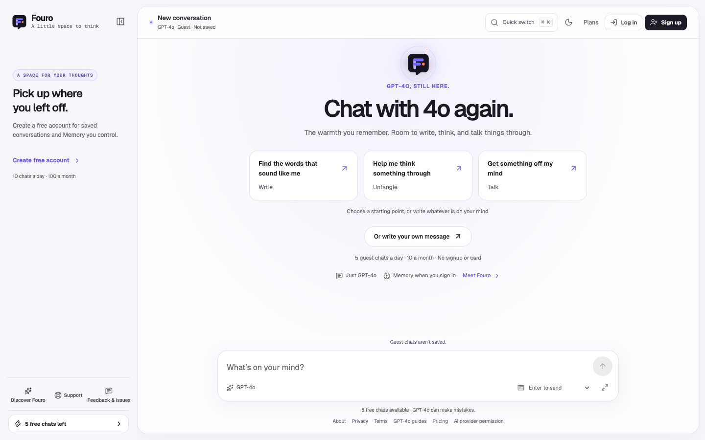
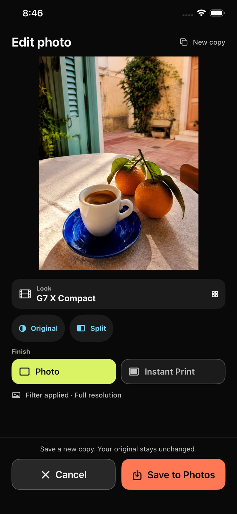

1M+ machines
ML model delivery pipeline
Software engineer at Microsoft.
Seven years of software engineering. I build ML delivery pipelines and agent tooling at Microsoft, from partner requirements to production rollout.
1M+ machines
ML model delivery pipeline
10× throughput
Compared with prior delivery workflow
100K+ calls / day
Windows release MCP tooling
60s+ → 2.4s
Portal page loads under load
SELECTED WORK

AI desktop technician. Approval gated repairs, signed evidence, and a 21 fixture evaluation suite.
Tauri · Rust · React · TypeScript

LLM chat with approved memory, account scoped retrieval, evaluations, and subscription billing.
Workers / D1 · OpenRouter · Clerk · Stripe
Published iOS camera. 128 editable film looks, live image processing, and native capture.
SwiftUI · AVFoundation · Core Image
MICROSOFT · NOVEMBER 2020 TO PRESENT
Architecture · Partner delivery · Production operations
Designed and implemented an ML model delivery pipeline with researchers, PMs, and OEM engineers.
Delivery pipeline: 1M+ machines served · 10× prior throughput
In a separate model promotion workflow, built approval gates, source version validation, duplicate suppression, idempotent retries, and end to end tests.
C# / .NET · Azure · Pipelines
Built Windows release MCP tooling for bounded, read only queries across tickets, payloads, and runtime state. Extended a shared server with diagnostic tools, contract tests, and behavior tests. Added an agent skill for model promotion requests.
100K+ daily calls · Controlled access to operational context
MCP · Tool contracts · Authorization
Defined telemetry requirements with OEM engineers and returned test data to ML researchers for validation. Built change detection and ingestion through Azure Logic Apps, Pipelines, and Blob Storage, with PM approval before release.
1M+ data points ingested daily
Azure Logic Apps · Blob Storage · Telemetry
Built indexed caches with failure safe refresh, bounded concurrency, and partial read rejection. Designed Windows publishing orchestration with one peer, from the specification to general availability. Hardened operator authorization and anti forgery checks.
Portal loads: over 60s to 2.4s under load
Caching · Service Fabric · Integration design
A CLOSER LOOK
Real app screens. Click an image to visit.



BACKGROUND
Full Stack Software Engineer. Built a Java, Angular, and MongoDB ServiceNow integration for a 60,000+ employee audience.
Intern. Built a capitalization table retrieval feature used by 500+ investment banking analysts.
Intern. Worked on e signature integration with ServiceNow and collaborated with engineers on an education version.
B.S. in Computer Science and Economics.
GET IN TOUCH
Applied AI · FDE · Product engineering